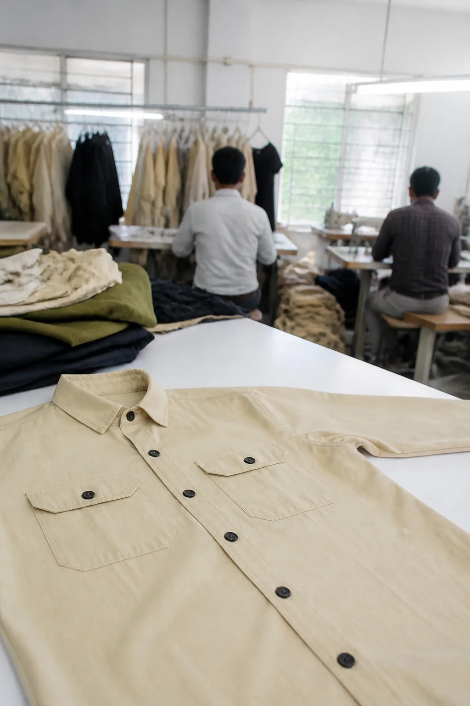
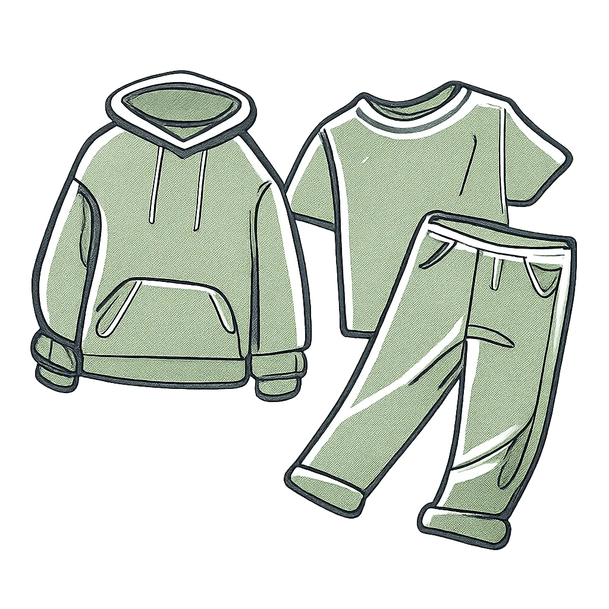
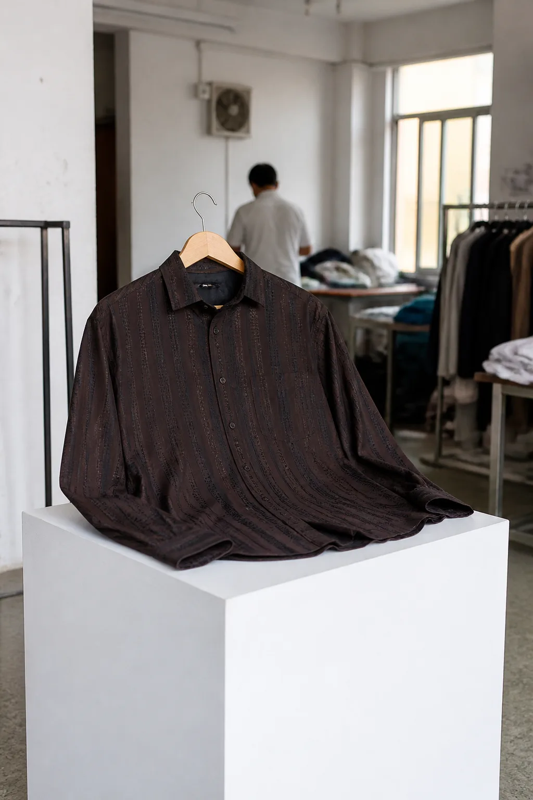
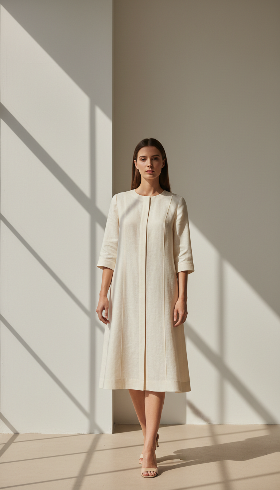

Where we begin
- Origin
- Vijayawada
- State
- Andhra Pradesh
- Built as
- A self-made brand
- Focus
- True fashion
GW / 002 · Our starting point
Girka World began with a simple intention in Vijayawada: make room for people to dress like themselves.

01 / Why we began
We are a newly established, self-made clothing brand finding our voice in Vijayawada, Andhra Pradesh. Girka World is built around the belief that an outfit can say something personal. The cut, the texture, the way a piece moves with you: those details matter more to us than following a look for its own sake.

02 / The Girka record
Our starting point is one city. The wardrobe we have in mind belongs to people all over India, each with their own way of wearing it.
03 / Garments as ideas
A silhouette can be quiet and still have presence. These are the shapes and details we keep coming back to as Girka World takes form.


See a shape you connect with? Tell us what caught your eye. We can talk through the current pieces and your fit questions, wherever you are in India.